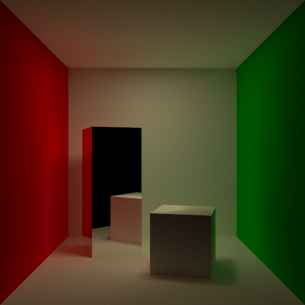
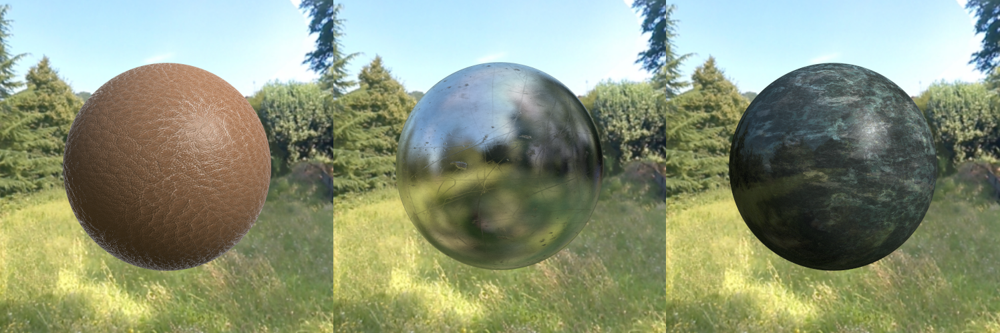
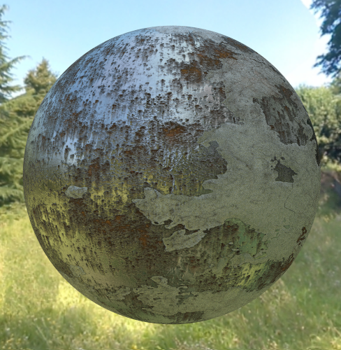
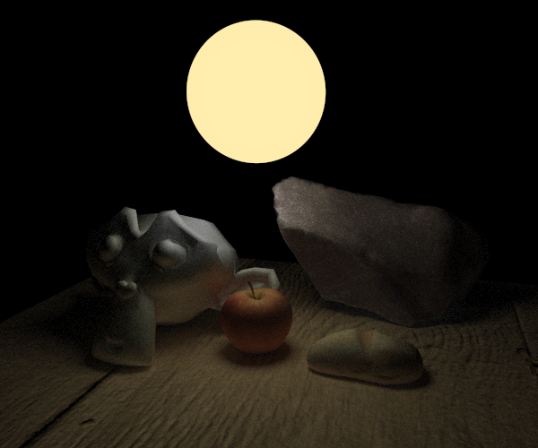

This is a C++ ray tracer I developed for my Bachelor’s thesis. I developed it with the purpose of learning the foundations of computer graphics and ray tracing. Because of that, it uses no graphics API, only pure C++ 11.
It supports many rendering features, such as:
- Unbiased Monte Carlo integration of the Rendering Equation via Path tracing
- Global illumination
- Anti-aliasing
- Defocus blur with customizable aperture and focus distance
- Importance sampling via BRDF sampling
- Next event estimation with shadow rays
- Smooth and flat shading
- Diffuse, Crystal, Metal, Blinn-Phong and Emissive materials with parameterizable roughness, metallicity, reflectance and intensity
- Fresnel reflections in diffuse materials
- PBR materials with support for texture maps, normal maps, roughness/glosiness maps, metallicity maps and ambient occlusion maps
- Point lights, area lights, and directional lights
- Image-based Lightning with sphere mapping
- Support for importing multiple asset formats such as OBJ, FBX and PLY via the Assimp library.
- Support for saving completed renders in various formats (JPEG, PNG, TIFF, BMP, XBMP, WebP, PPM, PBM, XBM and XPM)
- Editable scene via selecting objects and changing their position and orientation
- Quaternions for representing orientations and rotations
- Blender-like orbital camera
Images

A classic cornell box with one area light at the ceiling.

Some PBR materials. From left to right: leather, scratched metal and marble.

A rusty metal PBR.

A small scene with a sphere that has an emissive material.
Visit the github page for this project to see the code and more images (link is up top).